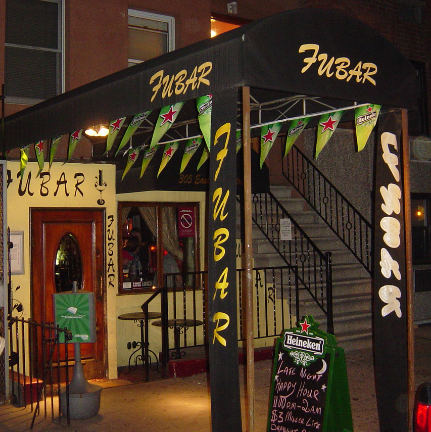

Fubar Bar & Tavern
This was my family's bar and it was a staple in our neighborhood.
Without a kitchen, it was known as a local dive bar that everyone has been to. We had many regulars that made our bar their second home.
Work: Owner and General Manger in charge of 15 staff members.
2008 Mid-Town
Crane Collapse
This horrific tradgedy changed the lives of many people. There were 7 people killed, 24 injured and a great deal of property damage.
This was the worst construction accident in Manhattan's history. The collapse made nationwide news and our bar received a lot of media Coverage.
Work: In charge of mass media interviews and public relations.